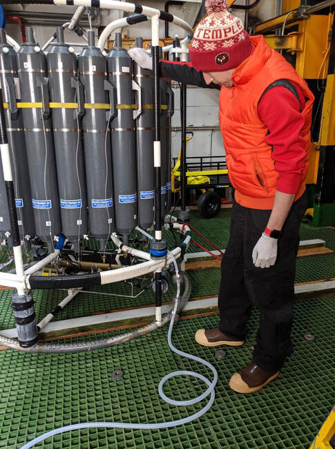
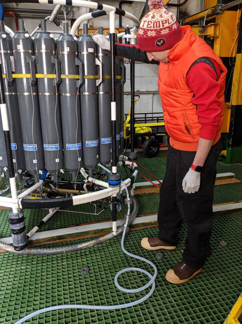

JD sampling from the CTD rosette onboard the RVIB NBP (2022)
Jean-David Grattepanche
Assistant Professor of Research
Department of Biology, Temple University
Philadelphia, PA, 19122, USA
Ecology and biodiversity of plankton, high throughput sequencing, bioinformatics.

Assistant Professor of Research
Department of Biology, Temple University
Philadelphia, PA, 19122, USA
Spatio-temporal variability and diversity of planktonic protists
Taxonomic and functional diversity of planktonic eukaryotes (mainly SAR)
Microbial food web
Phytoplankton-microzooplankton relationship
Microbial eukaryotic populations in Antarctica
2015 - 2017 - Diversity and dynamics of planktonic ciliates what can next generation sequencing technologies tell us? (NSF US).
Coordinator: Pr. Laura A. KATZ and Pr. George B. McMANUS.
2012 - 2014 - Project Diversity and biogeography of marine oligotrich and choreotrich ciliates (NSF US).
Coordinator: Pr. Laura A. KATZ and Pr. George B. McMANUS.
2011 - Project IMMERSE (CNRS EC2CO): Diversity and seasonal variability of heterotrophic eukaryotic communities in a productive marine environment (Eastern English Channel).
Coordinator: Pr Urania CHRISTAKI
2011 - Project ICCARE (Région Nord-Pas de Calais): Impact des Changements Climatiques et Anthropiques sur la biodiversité des pRotistes des Ecosystèmes côtiers.
Coordinator: Pr Sébastien LEFEBVRE
2010 - 2011 ANR DREP: Diversity & roles of eumycetes in the pelagial.
Coordinator: DR Télesphore SIME-NGANDO
2010 - 2011 - Project BOUM (SESAME): Biogeochemistry from the Oligotrophic to Ultraoligotrophic Mediterranean.
Coordinator: Dr. Thierry MOUTIN.
Mixotrophy in polar environment
Mixotrophy and flow cytometry
Bacterial production and diversity, and UV
Evolution and Eukaryotic diversity
Ciliates diversity and biogeography
SAR diversity
SAR diversity
HTS and bioinformatics
PhD advisor, microbial trophic web
Prey-predator experiments
Clone librairies construction
Metagenomic analyses